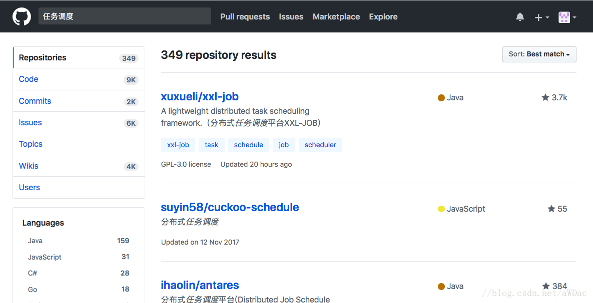

无论是自研调度工具，还是技术选型，都需要实先确定自己的业务需求，今儿根据具体的业务需求进行相关的研究与开发工作。
主要是个人记录日常事物，读者仅供参考。
一、调度工具目标
- 支持依赖配置：任务间依赖
- 支持定时任务与临时任务，灵活配置与启动停止
- 支持分布式运行任务
- 支持触发式运行任务：存在依赖的任务，上游任务运行结束，可以触发下游任务的运行
- 软件要求：
A、稳定性
B、易用性
C、任务支持配置管理
D、尽量支持WEB任务状态管理【查看、更新、运行、结束等】等操作
E、任务管理【上传任务文件、生成任务、添加依赖、删除任务等】等操作
F、支持配置管理【配置运行参数、运行日期、手动运行等】等操作
G、支持线程数管理【同时并发数据、JVM配置、垃圾回收器等JAVA启动配置】
H、负载均衡
二、可选软件
- Azkaban
- Oozie
- Airflow
- Github任务调度参考：
